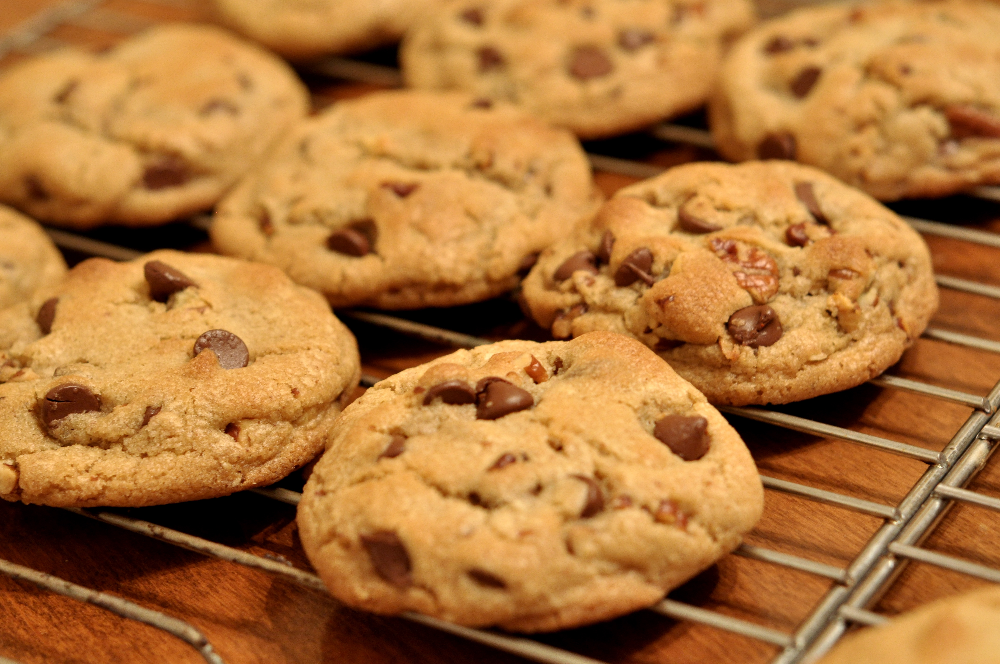

Make your own cookies with crips edges, chewy centers and melty chocolate chips!
Preheat the oven to 350 degrees F. Beat butter, white sugar, and brown sugar together in a large bowl with an electric mixer until smooth and creamy.
Beat in eggs, one at a time, then stir in vanilla.
Dissolve baking soda in hot water; add to batter along with salt and mix until combined.
Stir in flour, chocolate chips, and walnuts until a soft dough forms.
Drop rounded spoonfuls of cookie dough 2 inches apart onto unreased baking sheets
Bake in the preheated oven until edges are lightly browned, about 10 minutes.
Cool on the baking sheets briefly before transferring to a wire rack to cool completely.
Serve and enjoy! Or if you preffer, store them.